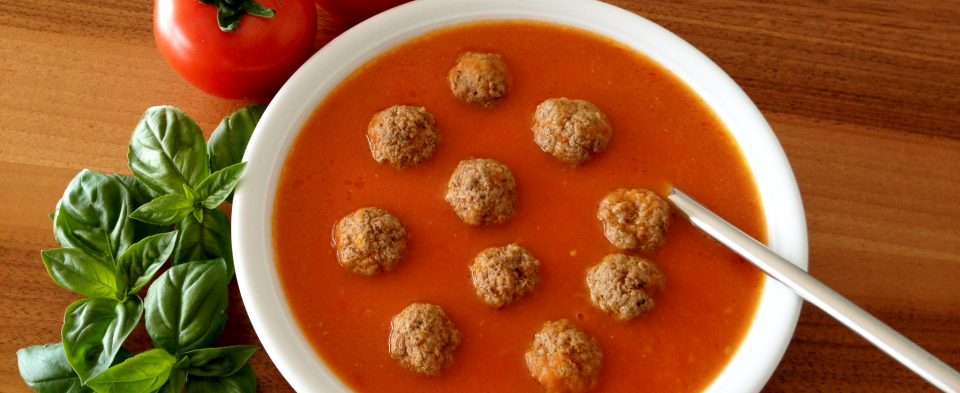

Klassieke Tomatensoep
Een lekker Tomatensoepje als voorgerecht of los.
Ingrediënten
- 1 ui
- 2 teentjes knoflook
- 3 takjes salie
- 2 takjes rozemarijn
- 1 eetlepel gerookte paprikapoeder
- 2,5 kg tomaten
- 150 ml rode wijn
- 500 ml water
- 2 eetlepel gembersiroop
- 100 ml zure room
Bereidingswijze
- Pel en snipper de ui. Pel de knoflook.
- Ris de bladeren van de salie en rozemarijn van hun stokjes en snijd ze fijn.
- Fruit het uitje in de olie maar zorg dat het uitje niet bruin wordt. Pers er na circa een minuut de knoflook bij. Fruit deze even mee, samen met het gerookte paprikapoeder.
- Snijd ondertussen de tomaten in grove parten. Voeg deze toe aan de soeppan. Laat het geheel op hoog vuur een beeetje pruttelen.
- De tomaten worden steeds zachter. Help de tomaten na een minuut of 3 een beetje om zacht te worden door rode wijn toe te voegen. Laat het zo circa 20 tot 30 minuten op laag vuur doorpruttelen zodat de tomaten de tijd heeft om alle smaken af te geven en het vocht dat uit de tomaat komt een beetje kan verdampen.
- Er komt automatisch veel vocht uit de tomaten. Mocht de soep toch te dik worden, voeg dan een beetje water toe. Je hoeft dus niet al het water te gebruiken.
- Breng de soep op smaak met peper en zout. Voeg ook een scheutje gembersiroop toe.
